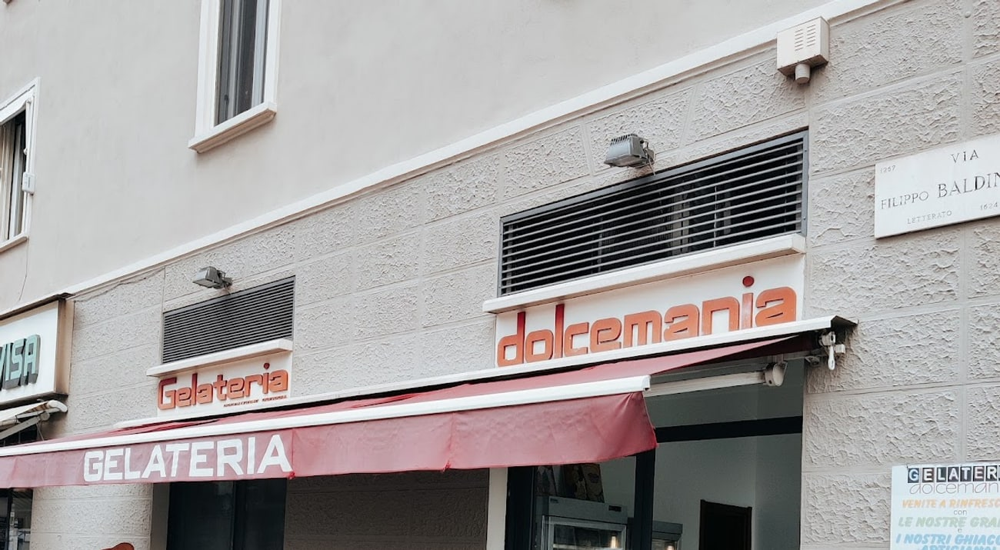

Gelateria · Bovisa, Milano
Quando le altre
hanno chiuso.
La voglia di gelato arriva sempre a un'ora scomoda. Noi siamo aperti tutti i giorni fino alle 23:50 — domenica compresa.

Fino a tardi
Aperti dieci ore
oltre l'ora di pranzo.
Le gelaterie chiudono presto. Noi no. Dalle dieci del mattino fino a mezzanotte meno dieci, ogni giorno della settimana, festivi inclusi.
Vuol dire che ci siamo dopo cena, dopo il cinema, dopo la lezione serale al Politecnico qui a due passi. Quando la voglia arriva, la porta è ancora aperta.
«10 e lode alla ragazza al bancone: super gentile, e si è pure interessata alle nostre opinioni.»
whyagata, recensione Google
I gusti
Un banco intero,
a quell'ora.
Fior di latte, pistacchio, nocciola, fondente, stracciatella, amarena, cassata, cocco, caffè, biscotto, nutella, yogurt. E fra i più richiesti, un fondente con popcorn e senza latte, per chi il latte non lo può o non lo vuole.
- Pistacchio
- Fior di latte
- Fondente
- Stracciatella
- Nocciola
- Amarena
- Cassata
- Cocco
- Caffè
- Biscotto
- Nutella
- Fondente e popcorn · senza latte
I gusti girano con la stagione: questo è quello che c'era il giorno della foto.
Granite e ghiaccioli
Venite a
rinfrescarvi.
Non l'abbiamo scritto noi: è sul cartello appeso fuori. Le nostre granite e i nostri ghiaccioli artigianali — il modo più veloce per tirare il fiato quando fa caldo e la giornata non finisce mai.
E se avete voglia di qualcosa di diverso, c'è anche il bubble tea. La vetrina delle torte gelato — pistacchio e non solo — è lì per le occasioni.
Chiama DolcemaniaRecensioni Google
Cosa dicono.
«10 e lode alla ragazza al bancone, super gentile, carina e disponibile, si è pure interessata alle nostre opinioni. I gusti erano zuppa inglese, nutellone e pistacchio salato.»
whyagata
«The ice cream selection here is nothing short of amazing. I tried the Pistacchio and was blown away by its creamy texture.»
Madusanka Herath
«Gelati molto buoni, ragazze molto simpatiche. A parte il gelato buonissimo, panna montata da favola.»
Da una recensione Google
Dove siamo
All'angolo,
in Bovisa.
Via Don Giovanni Verità 1angolo Via Filippo Baldinucci
20158 Milano
- lunedì10–23:50
- martedì10–23:50
- mercoledì10–23:50
- giovedì10–23:50
- venerdì10–23:50
- sabato10–23:50
- domenica10–23:50
Sul posto · asporto · consegna a domicilio
Domande
Fino a che ora siete aperti?
Fino alle 23:50, tutti i giorni. Apriamo alle 10 del mattino e chiudiamo quasi a mezzanotte, domenica compresa.
Fate anche granite e ghiaccioli?
Sì: granite e ghiaccioli artigianali, come c'è scritto sul cartello fuori. D'estate sono il modo più veloce per rinfrescarsi.
C'è qualcosa senza latte?
Sì: fra i gusti gira il cioccolato fondente con popcorn senza latte, ed è uno dei più richiesti. I ghiaccioli alla frutta sono un'altra opzione.
Fate torte gelato?
Sì, ci sono le torte gelato nella vetrina — pistacchio e non solo — e i pasticcini freddi. Per una torta grande conviene una telefonata.
Dove siete esattamente?
All'angolo tra Via Don Giovanni Verità e Via Filippo Baldinucci, in Bovisa, a Milano.